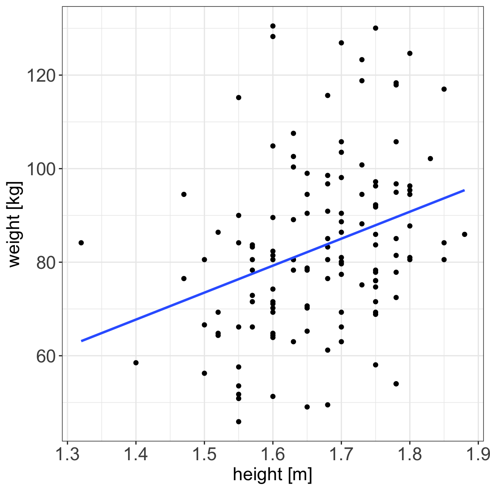
Linear and regularized models
Olga Dethlefsen, PhD
Outline
- Linear regression
- Generalized linear models
- Regularization
Why linear and regularized models?
- Simple and interpretable: Show how predictors relate to outcomes.
- Versatile: Used for both regression and classification.
- Strong baselines: Often competitive with more complex models.
- Useful in life sciences: Regularization helps with high-dimensional data
- Inference and prediction
What linear models are
definition
A linear model describes a continuous outcome \(Y\) using one or more predictors \(X\).
For example, \[ Y_i = \beta_0 + \beta_1x_{1i} + \dots + \beta_px_{pi} + \epsilon_i \]
where:
\(Y_i\) is the observed outcome for individual \(i\)
\(x_{1i},\dots,x_{pi}\) are predictor values
\(\beta_0,\dots,\beta_p\) are unknown model parameters describing how the expected outcome depends on the predictors (systematic part)
\(\epsilon_i\) represents variation not explained by the systematic part of the model
Predictors can be numerical, categorical, or a mixture of both.

What does “linear” mean?
A linear model is linear in its model parameters.
For example:
\[ Y_i = \beta_0 + \beta_1X_i + \epsilon_i \]
is a linear model.
But so is:
\[ Y_i = \beta_0 + \beta_1X_i + \beta_2X_i^2 + \epsilon_i \]
because the parameters \(\beta_0\), \(\beta_1\) and \(\beta_2\) still enter the model linearly.
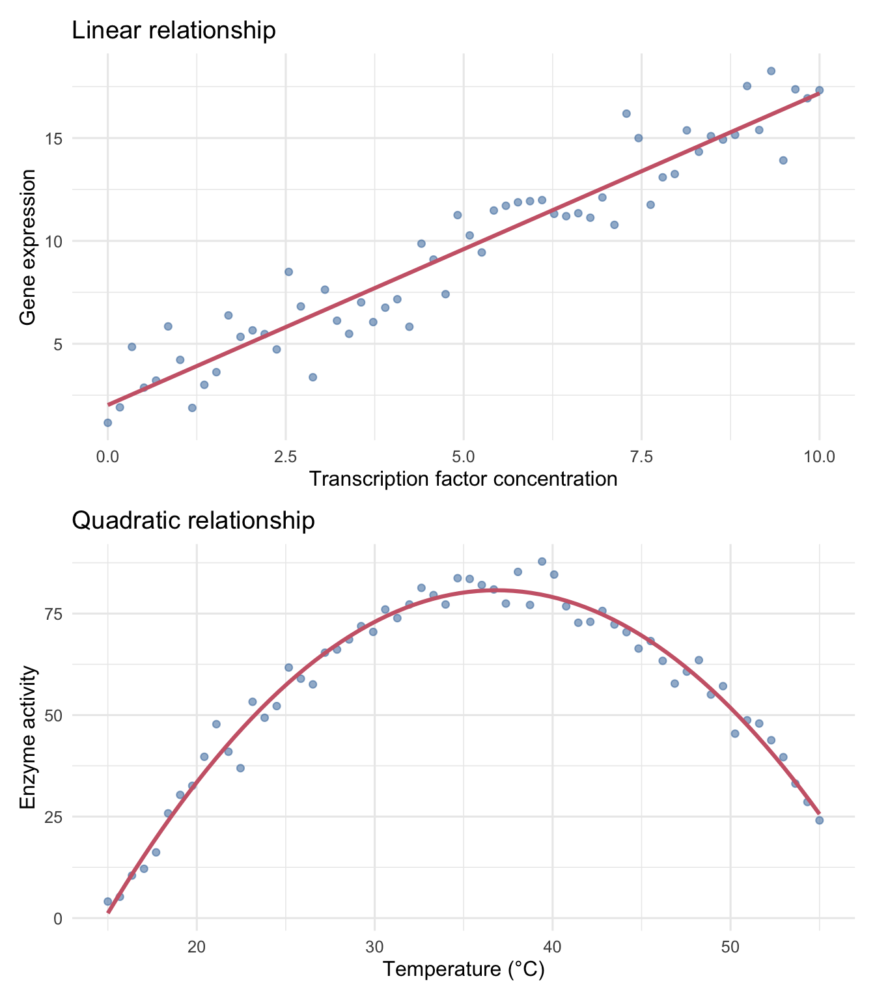
Simple linear regression
Simple linear regression describes the relationship between the numerical outcome and one numerical explanatory variable
Simple linear regression
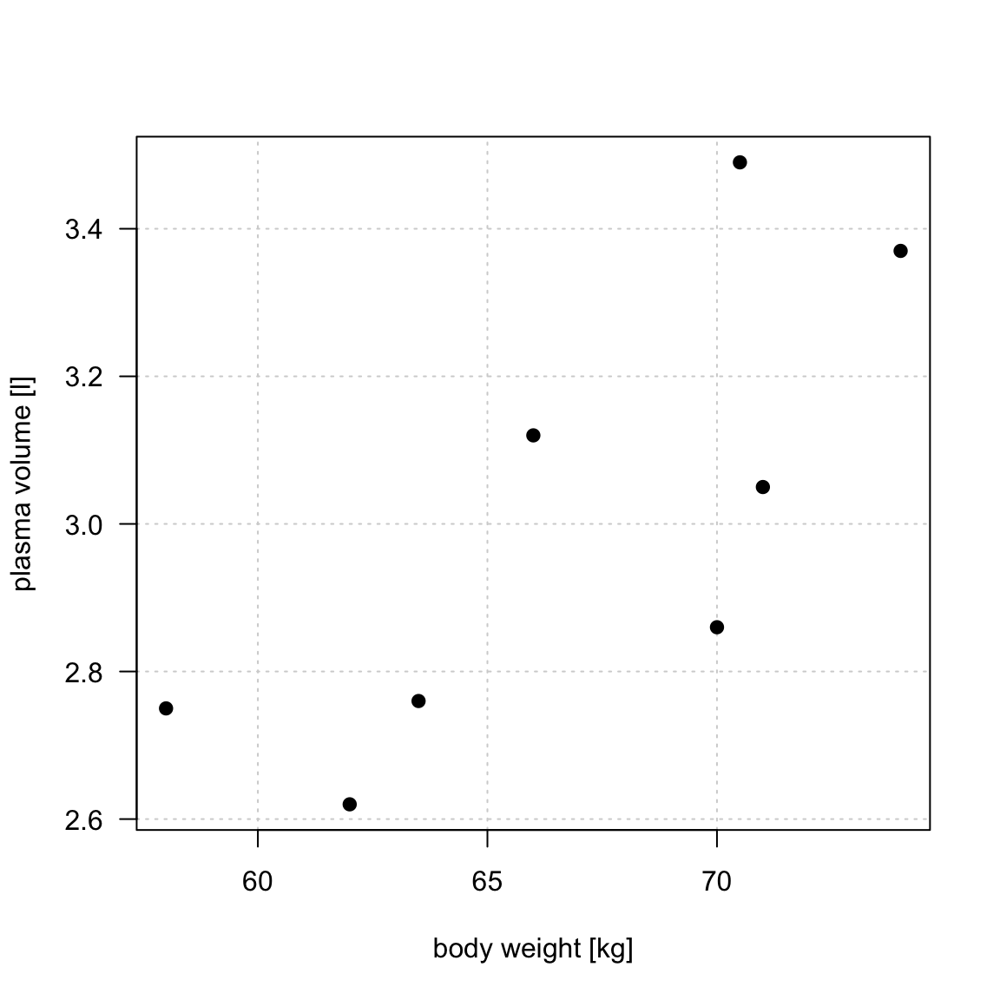
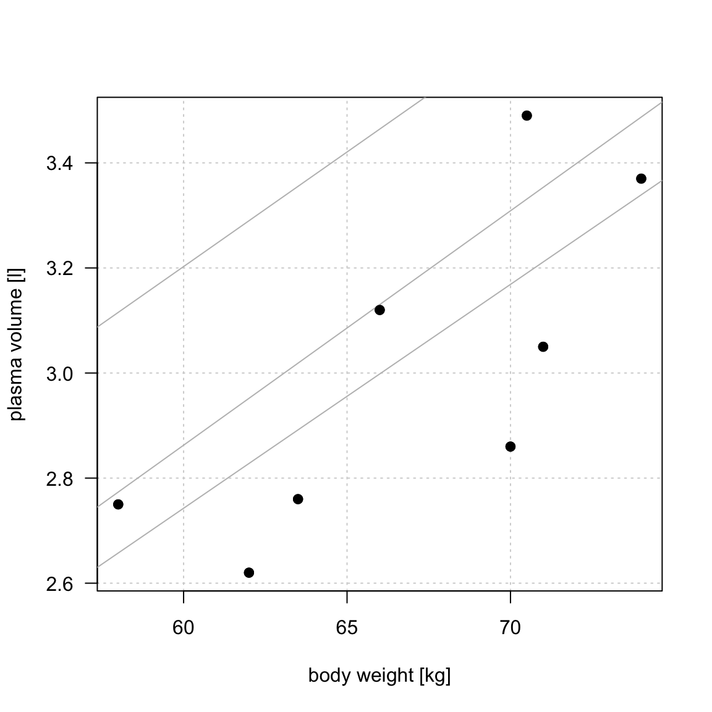
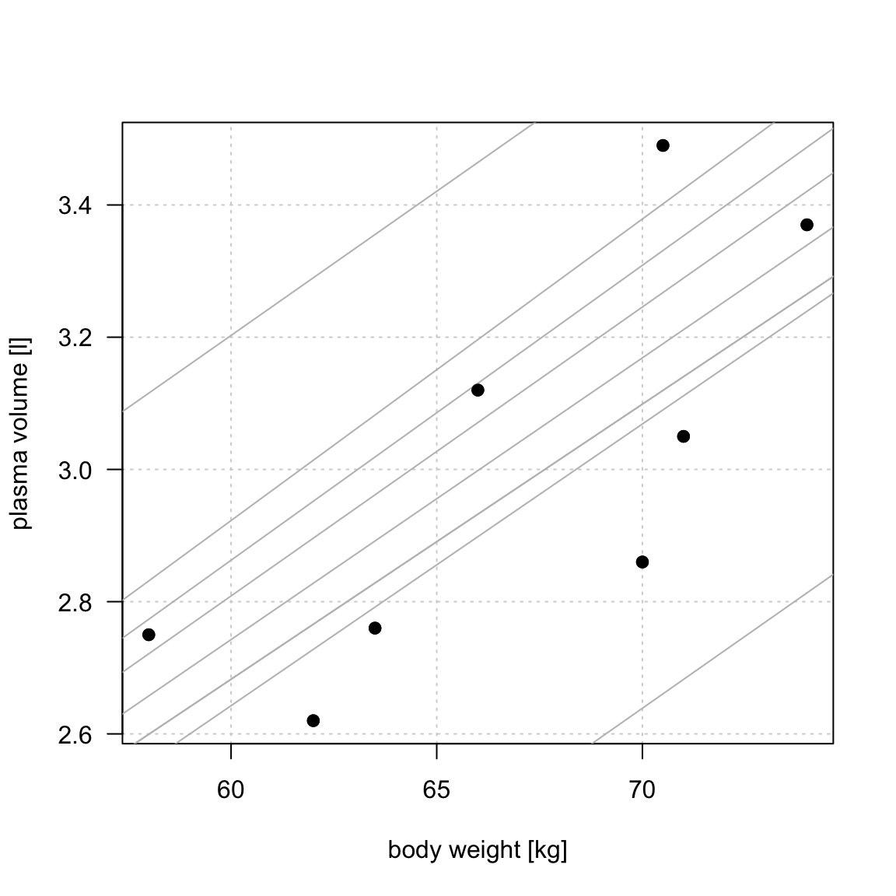
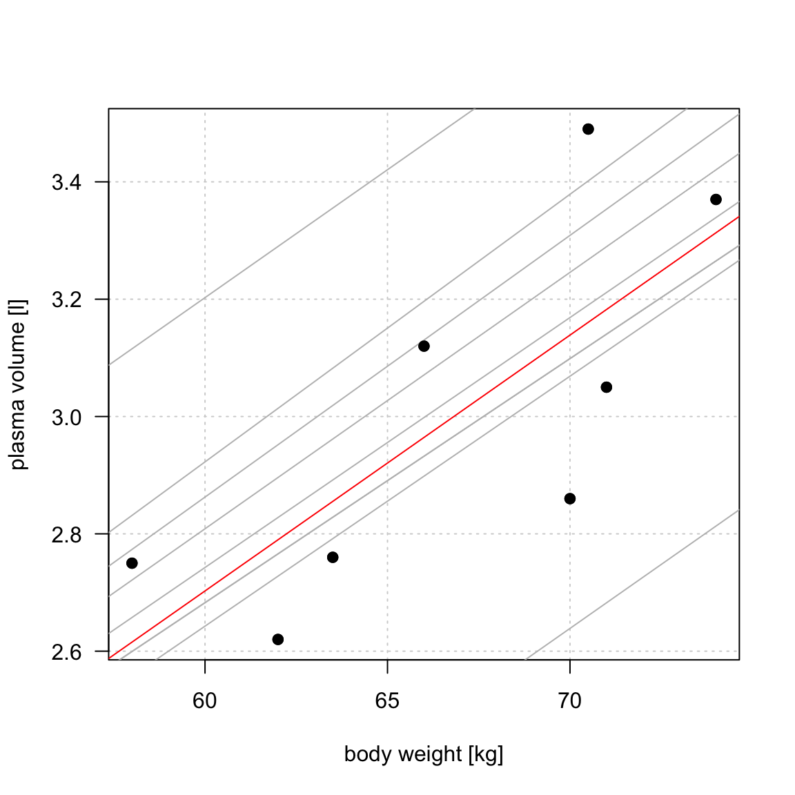
Simple linear regression
In other words, we are finding the best-fitting straight line to build a model to represent the relationship between plasma volume (\(Y\)) and explanatory body weight variable (\(x\))
The model can be written as:
\[ Y_i = \alpha + \beta x_i + \epsilon_i, \]
where:
- \(x\): is predictor, feature, exposure variable, explanatory variable, independent variable, covariate
- \(Y\): is response, outcome, dependent variable
- \(\alpha\): intercept (coefficient)
- \(\beta\): regression coefficient
- \(\epsilon_i\): random error term
The fitted model gives predicted values:
\[ \hat{y}_i=\hat{\alpha}+\hat{\beta}\cdot x_i \] In our case:
\[ \hat{y}_i=0.086+ 0.044 \cdot x_i \]

Least squares
estimating coefficients by minimizing RSS
Let
\[ \hat{y}_i=\hat{\alpha}+\hat{\beta}x_i \]
be the fitted value for observation \(i\).
- The residual is
\[ e_i = y_i-\hat{y}_i \]
- The residual sum of squares is
\[ RSS = \sum_{i=1}^n e_i^2 \]
- Least squares chooses \(\hat{\alpha}\) and \(\hat{\beta}\) to minimize RSS.
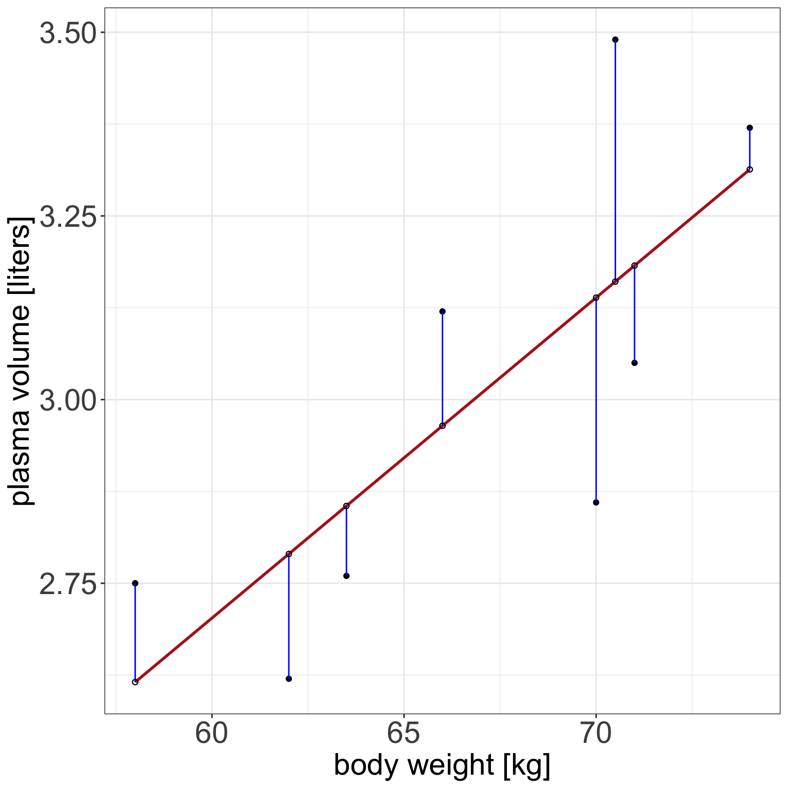
Another way to view the linear model
Expected-value interpretation
A linear regression model describes the expected value of the outcome for a given value of the predictor:
\[ E(Y \mid X=x)=\alpha+\beta x \]
Slope
\(\widehat{plasma} = 0.0857 + 0.0436 \cdot weight\)
Linear regression estimates the model parameters \(\alpha\) and \(\beta\): \(Y_i = \alpha + \beta x_i + \epsilon_i\)
The slope \(\hat{\beta}=0.0436\) describes the expected change in plasma volume for a one-unit increase in body weight.
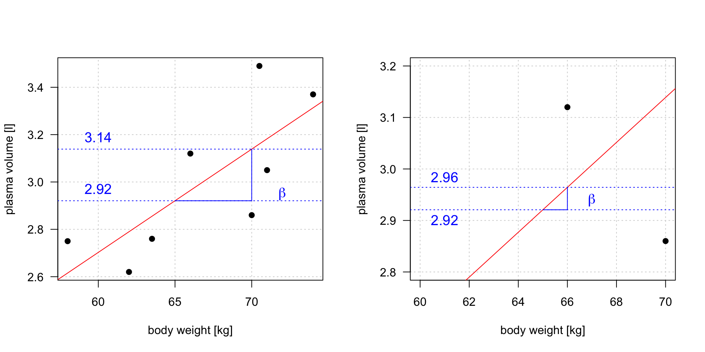
Increasing weight by 5 kg corresponds to \(3.14 - 2.92 = 0.22\) increase in plasma volume. Increasing weight by 1 kg corresponds \(2.96 - 2.92 = 0.04\) increase in plasma volume
Intercept
\(\widehat{plasma} = 0.0857 + 0.0436 \cdot weight\)
Linear regression estimates the model parameters \(\alpha\) and \(\beta\): \(Y_i = \alpha + \beta x_i + \epsilon_i\)
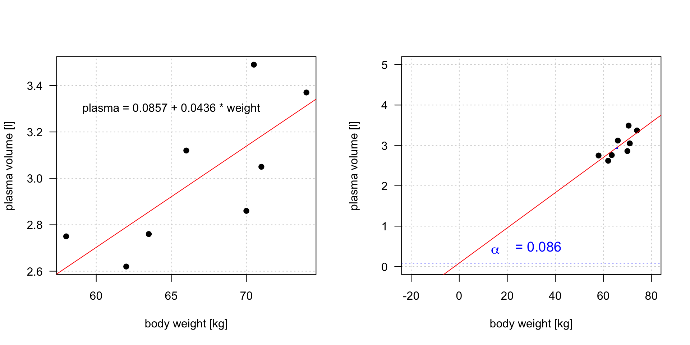
The intercept \(\hat{\alpha}=0.0857\) is the expected outcome when the predictor equals zero. It is not always meaningful.
Inference
Hypothesis testing in linear regression
We can test whether a predictor is associated with the outcome.
Hypotheses:
- \(H_0: \beta = 0\) — no linear association between \(X\) and \(Y\)
- \(H_a: \beta \neq 0\) — a non-zero linear association
Test statistic:
\[ t = \frac{\hat{\beta}}{SE(\hat{\beta})} \]
- Compares the estimated coefficient to its standard error.
- Under \(H_0\), follows a t-distribution with \(n-p\) degrees of freedom.
- A larger absolute \(t\)-value provides stronger evidence against \(H_0\).
The p-value measures how unusual a result this extreme (or more extreme) would be if \(H_0\) were true.
Statistical significance does not necessarily imply biological importance or predictive usefulness.
Predictions
Predicting plasma volume given new weight information
\[ \hat{y}_i=0.086+ 0.044 \cdot x_i \]
\(R^2\) and \(R^2\)(adj)
measuring the model fit
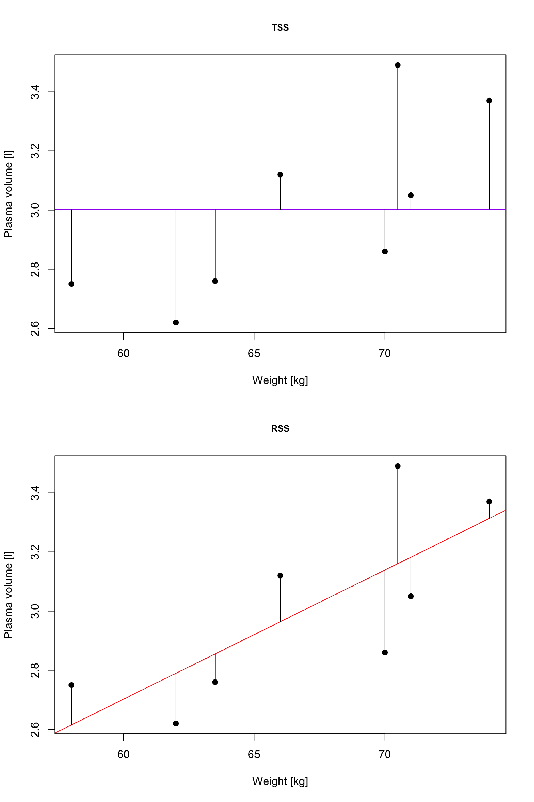
Measure of model fit is given by \[R^2 = 1 - \frac{RSS}{TSS}\] where:
- RSS is the residual sum-of-squares the fitted model of interest
- TSS is the sum of squares of the null model
- In the case of multiple linear regression we are using the adjusted version of \(R^2\) to account for multiple predictors:
\[R^2(adj) = 1-\frac{\frac{RSS}{n-p-1}}{\frac{TSS}{n-1}}\]
Multiple regression
Beyond simple regression
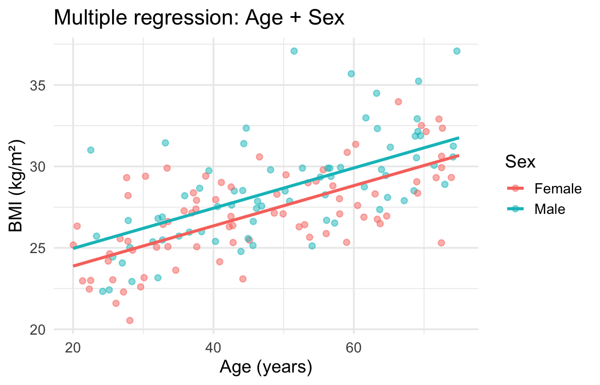
Multiple regression
The assumptions of a linear model
- Linearity: the expected value of \(Y\) is a linear function of the model coefficients.
- Independence of errors: errors from different observations are independent.
- Normality of errors: errors are normally distributed.
- Constant variance (homoscedasticity): the variance of the errors is constant across predictor values.
Residuals, \(e_i = y_i - \hat{y}_i\) are the main ingredient to check model assumptions.
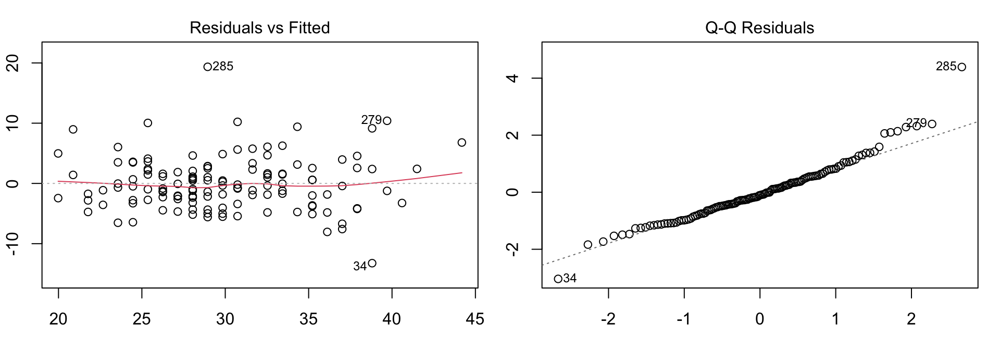
Simple and multiple regression
Recap
- Useful when we want to predict a numerical outcome.
- Simple regression uses one predictor, while multiple regression uses two or more predictors.
- Ordinary linear regression assumes a linear relationship between predictors and the expected outcome.
- But what if the outcome is binary, a count, proportion or another type of variable?
Generalized Linear Models (GLMs)
GLMs
Why do we need GLMs?
In ordinary linear regression, the expected outcome is modeled as:
\[ E(Y_i \mid \mathbf{x}_i) = \beta_0 + \beta_1 x_{1i} + \cdots + \beta_p x_{pi} \]
This works well for many continuous outcomes, but if our outcome is:
- Binary: disease yes/no, treatment response yes/no
- Count: number of events, number of cases
- Proportion: number of successes out of trials
The expected value must respect certain constraints:
- Probabilities must be between 0 and 1.
- Expected counts cannot be negative.
Generalized linear models (GLMs) extend linear regression to accommodate these different types of outcomes.
Constraints
Example
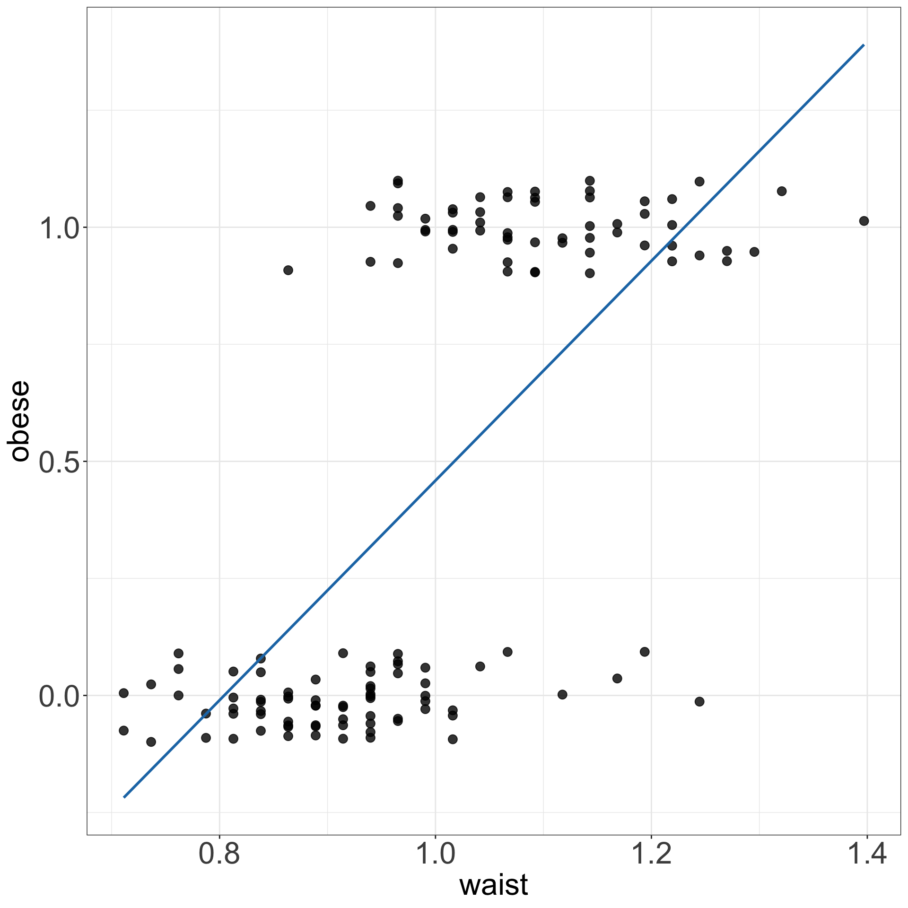
Fitting linear model to binary data, to model high BMI status coded as 1 (BMI>30) and 0 (otherwise) using waist variable. Linear model does not fit the data well in this case and the predicted values can take any value, not only 0 and 1.
The GLM idea
We keep the same linear predictor:
\[ \eta_i = \beta_0+\beta_1x_{1i}+\cdots+\beta_px_{pi}. \]
But instead of modelling the expected outcome directly, we connect it to the linear predictor using a link function:
\[ \boxed{g(\mu_i) = \eta_i} \]
where \(\mu_i = E(Y_i \mid \mathbf{x}_i)\) is the expected outcome.
The link function
Different link functions allow us to model different types of outcomes:
| Outcome | Model | Distribution | Link function \(g(\mu)\) |
|---|---|---|---|
| Continuous | Linear regression | Gaussian | Identity: \(\mu\) |
| Binary / proportions | Logistic regression | Binomial | Logit: \(\log\left(\frac{\mu}{1-\mu}\right)\) |
| Counts | Poisson regression | Poisson | Log: \(\log(\mu)\) |
| Positive continuous | Gamma regression | Gamma | Log: \(\log(\mu)\) |
All models share the same general structure:
\[ g(\mu_i) = \eta_i = \beta_0 + \beta_1 x_{1i} + \cdots + \beta_p x_{pi} \]
Example: logistic regression
Suppose we want to predict whether an individual has BMI > 30 using age.
- Outcome: \(Y_i = 1\) if BMI > 30, otherwise \(Y_i = 0\)
- Distribution: \(Y_i \sim \operatorname{Bernoulli}(p_i)\)
- Expected outcome: \(E(Y_i \mid x_i) = p_i\)
Logistic regression uses the logit link:
\[ \underbrace{\log\left(\frac{p_i}{1-p_i}\right)}_{\text{logit link}} = \underbrace{\beta_0 + \beta_1 x_i}_{\text{linear predictor}} \]
where \(p_i = P(Y_i = 1 \mid x_i)\).
Logistic regression: predicting probabilities
The inverse logit transforms the linear predictor into a probability:
\[ p_i = \frac{1}{1 + e^{-(\beta_0 + \beta_1 x_i)}} \]
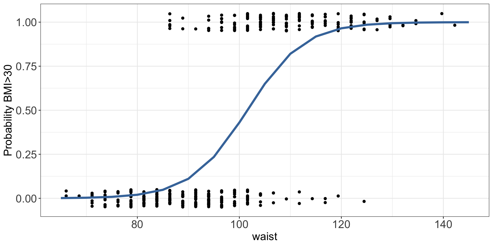
The link function allows a linear predictor to produce probabilities between 0 and 1.
Logistic regression
R
Python
Or as part of tidymodels and scikit-learn
Logistic regression
Inference & Predictions
We can test whether a predictor is associated with the outcome by testing
\[ H_0:\beta_j=0. \]
We classify new observations by applying a probability threshold (e.g., 0.5) to the predicted probabilities.
Call:
glm(formula = BMI_gt30 ~ waist, family = binomial(link = "logit"),
data = data_diabetes)
Coefficients:
Estimate Std. Error z value Pr(>|z|)
(Intercept) -18.29349 1.83541 -9.967 <2e-16 ***
waist 0.18013 0.01843 9.774 <2e-16 ***
---
Signif. codes: 0 '***' 0.001 '**' 0.01 '*' 0.05 '.' 0.1 ' ' 1
(Dispersion parameter for binomial family taken to be 1)
Null deviance: 518.24 on 394 degrees of freedom
Residual deviance: 282.93 on 393 degrees of freedom
(8 observations deleted due to missingness)
AIC: 286.93
Number of Fisher Scoring iterations: 6How are logistic regression coefficients estimated?
Maximum likelihood estimation (MLE) finds the coefficients that make the observed outcomes most probable.
The coefficients are estimated by maximizing the likelihood:
\[
\hat{\boldsymbol{\beta}} = \arg\max_{\boldsymbol{\beta}} L(\boldsymbol{\beta})
\]
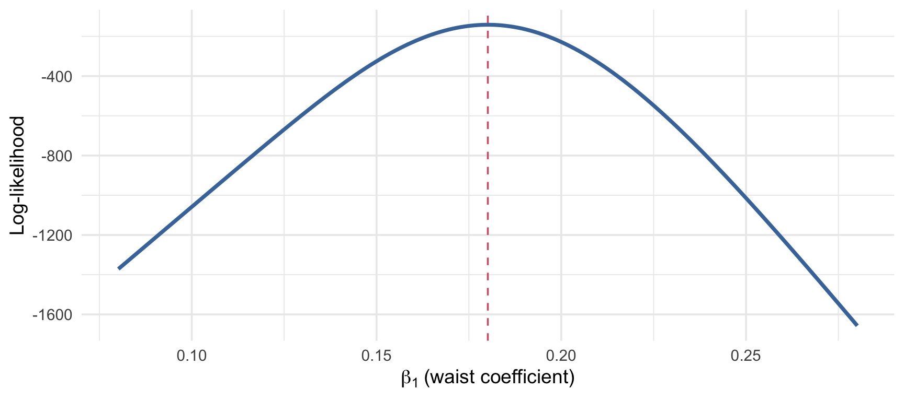
Logistic regression
Deviance (rather than \(R^2\))
Deviance: measures how well the fitted model explains the observed data compared with a perfectly fitting (saturated) model.
In R, summary(glm(...)) reports:
- Null deviance: deviance of the intercept-only model.
- Residual deviance: deviance of the fitted model.
A reduction in deviance indicates improved fit to the training data.
Logistic regression
Odds ratio
In logistic regression, we often interpret coefficients by exponentiating them:
\[ OR = e^{\hat{\beta}}. \]
This gives an odds ratio.
For example, if \(\hat{\beta}=0.18\),
\[ e^{0.18}\approx1.2. \]
This means that for each one-unit increase in
waist, the odds of having \(BMI>30\) are multiplied by about 1.2.
Call:
glm(formula = BMI_gt30 ~ waist, family = binomial(link = "logit"),
data = data_diabetes)
Coefficients:
Estimate Std. Error z value Pr(>|z|)
(Intercept) -18.29349 1.83541 -9.967 <2e-16 ***
waist 0.18013 0.01843 9.774 <2e-16 ***
---
Signif. codes: 0 '***' 0.001 '**' 0.01 '*' 0.05 '.' 0.1 ' ' 1
(Dispersion parameter for binomial family taken to be 1)
Null deviance: 518.24 on 394 degrees of freedom
Residual deviance: 282.93 on 393 degrees of freedom
(8 observations deleted due to missingness)
AIC: 286.93
Number of Fisher Scoring iterations: 6From linear models to regularization
Both linear and logistic regression estimate model coefficients by optimizing an objective function:
- Linear regression: minimizes the residual sum of squares (RSS).
- Logistic regression: minimizes the negative log-likelihood.
But with many predictors, especially correleated predictors:
- Models may overfit the training data.
- Coefficient estimates may become unstable.
- Predictions may generalize poorly to new observations.
Regularization addresses these problems.
Regularized linear models
definition
- Regularized regression expands on the regression by adding a penalty term(s) to shrink the model coefficients of less important features towards zero.
- Depending on the penalty added, we talk about Ridge, Lasso or Elastic Nets regression.
Regularized regression
Ridge regression
- Previously we saw that the least squares fitting procedure estimates model coefficients \(\beta_0, \beta_1, \cdots, \beta_p\) using the values that minimize the residual sum of squares: \[RSS = \sum_{i=1}^{n} \left( y_i - \beta_0 - \sum_{j=1}^{p}\beta_jx_{ij} \right)^2\]
- In regularized regression the coefficients are estimated by minimizing slightly different quantity. Specifically, in Ridge regression we estimate \(\hat\beta^{L}\) that minimizes \[\sum_{i=1}^{n} \left( y_i - \beta_0 - \sum_{j=1}^{p}\beta_jx_{ij} \right)^2 + \lambda \sum_{j=1}^{p}\beta_j^2 = RSS + \lambda \sum_{j=1}^{p}\beta_j^2 \tag{1}\]
where:
\(\lambda \ge 0\) is a tuning parameter to be determined separately e.g. via cross-validation
Regularized regression
Ridge regression
\[\sum_{i=1}^{n} \left( y_i - \beta_0 - \sum_{j=1}^{p}\beta_jx_{ij} \right)^2 + \lambda \sum_{j=1}^{p}\beta_j^2 = RSS + \lambda \sum_{j=1}^{p}\beta_j^2\]
Equation 1 trades two different criteria:
- lasso regression seeks coefficient estimates that fit the data well, by making RSS small
- however, the second term \(\lambda \sum_{j=1}^{p}\beta_j^2\), called shrinkage penalty is small when \(\beta_1, \cdots, \beta_p\) are close to zero, so it has the effect of shrinking the estimates of \(\beta_j\) towards zero.
- the tuning parameter \(\lambda\) controls the relative impact of these two terms on the regression coefficient estimates
- when \(\lambda = 0\), the penalty term has no effect
- as \(\lambda \rightarrow \infty\) the impact of the shrinkage penalty grows and the ridge regression coefficient estimates approach zero
Regularized regression
Ridge regression
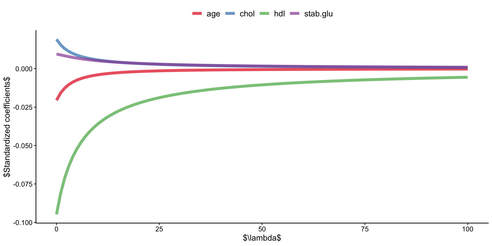
Example of Ridge regression to model BMI using age, chol, hdl and glucose variables: model coefficients are plotted over a range of lambda values, showing how initially for small lambda values all variables are part of the model and how they gradually shrink towards zero for larger lambda values.
Bias-variance trade-off
Ridge regression can improve prediction by accepting a little more bias in exchange for lower variance.
Bias: error from a model that is too simple
→ may miss real patterns
→ underfittingVariance: error from a model that is too sensitive to the training data
→ may capture noise
→ overfittingRegularization reduces flexibility by shrinking coefficients
→ often lower variance
→ better prediction on new data
\[ \text{prediction error} \approx \text{bias}^2 + \text{variance} + \text{irreducible error} \]
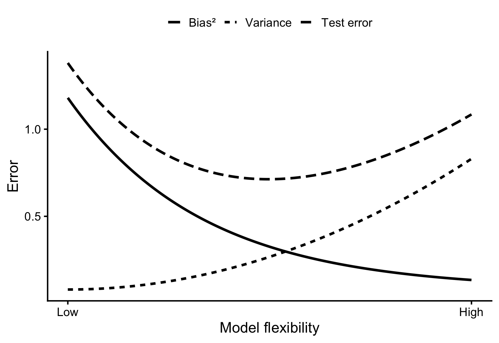
Ridge vs. Lasso
In Ridge regression we minimize: \[\sum_{i=1}^{n} \left( y_i - \beta_0 - \sum_{j=1}^{p}\beta_jx_{ij} \right)^2 + \lambda \sum_{j=1}^{p}\beta_j^2 = RSS + \lambda \sum_{j=1}^{p}\beta_j^2 \tag{2}\] where \(\lambda \sum_{j=1}^{p}\beta_j^2\) is also known as L2 regularization element or \(l_2\) penalty
In Lasso regression, that is Least Absolute Shrinkage and Selection Operator regression we change penalty term to absolute value of the regression coefficients: \[\sum_{i=1}^{n} \left( y_i - \beta_0 - \sum_{j=1}^{p}\beta_jx_{ij} \right)^2 + \lambda \sum_{j=1}^{p}|\beta_j| = RSS + \lambda \sum_{j=1}^{p}|\beta_j| \tag{3}\] where \(\lambda \sum_{j=1}^{p}|\beta_j|\) is also known as L1 regularization element or \(l_1\) penalty
Ridge vs. Lasso
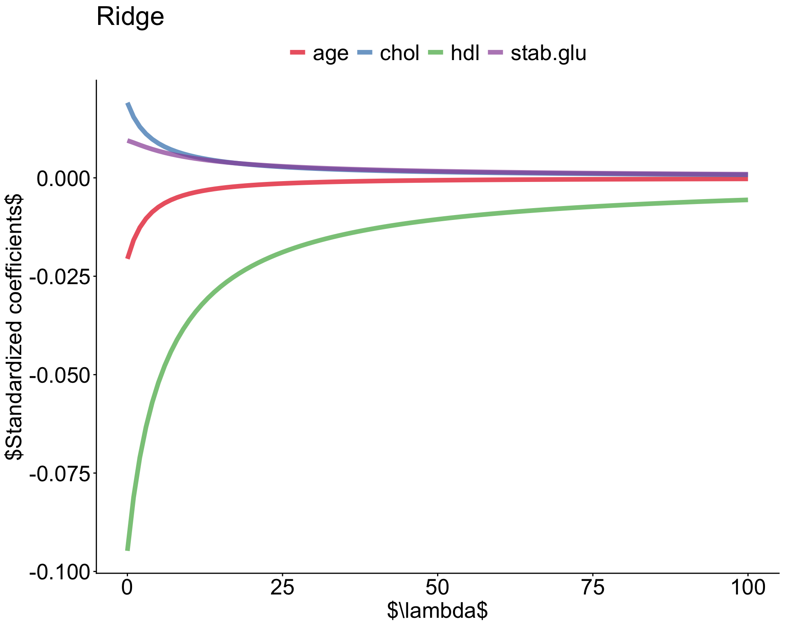
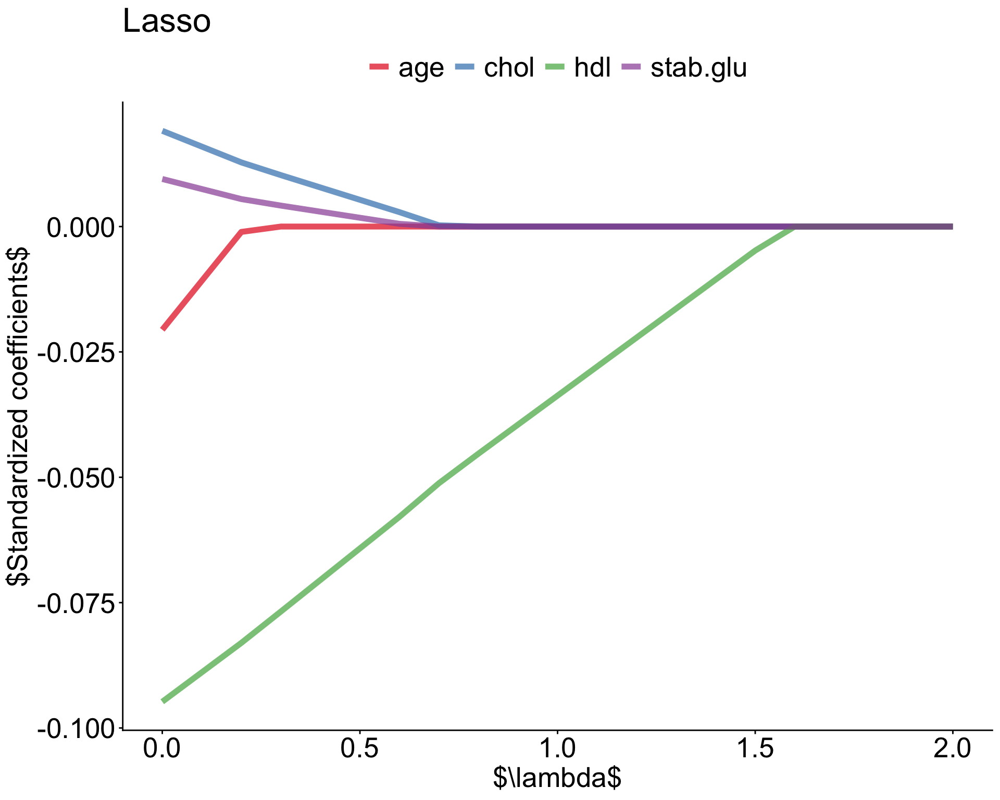
Elastic Net
Elastic Net use both L1 and L2 penalties to try to find middle grounds by performing parameter shrinkage and variable selection. \[\sum_{i=1}^{n} \left( y_i - \beta_0 - \sum_{j=1}^{p}\beta_jx_{ij} \right)^2 + \lambda \sum_{j=1}^{p}|\beta_j| + \lambda \sum_{j=1}^{p}\beta_j^2 = RSS + \lambda \sum_{j=1}^{p}|\beta_j| + \lambda \sum_{j=1}^{p}\beta_j^2 \tag{4}\]
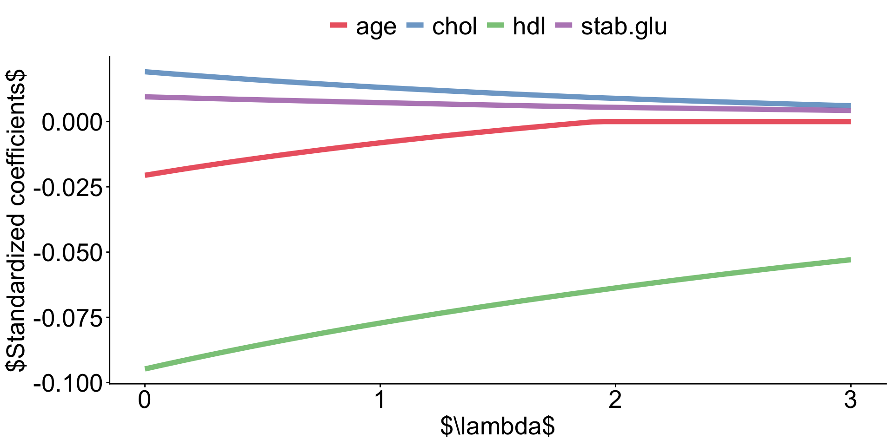
Example of Elastic Net regression to model BMI using age, chol, hdl and glucose variables: model coefficients are plotted over a range of lambda values and alpha value 0.1, showing the changes of model coefficients as a function of lambda being somewhere between those for Ridge and Lasso regression.
Elastic Net
In R with glmnet
In the glmnet library we can fit Elastic Net by setting parameters \(\alpha\). Under the hood glmnet minimizes a cost function: \[\sum_{i_=1}^{n}(y_i-\hat y_i)^2 + \lambda \left ( (1-\alpha) \sum_{j=1}^{p}\beta_j^2 + \alpha \sum_{j=1}^{p}|\beta_j|\right )\] where:
- \(n\) is the number of samples
- \(p\) is the number of parameters
- \(\lambda\), \(\alpha\) hyperparameters control the shrinkage
and:
- \(\alpha = 0\) corresponds to Ridge regression
- \(\alpha=1\) this corresponds to Lasso regression
- \(0 < \alpha < 1\) gives Elastic Net regularization, combining both L1 and L2 regularization terms
Logistic Lasso
Logistic regression + Lasso regularization
- We estimate set of coefficients \(\hat \beta\) that minimize the combined logistic loss function and the Lasso penalty:
\[ \left( \sum_{i=1}^n [y_i \log(p_i) + (1-y_i) \log(1-p_i)] \right) + \lambda \sum_{j=1}^p |\beta_j| \]
where:
- \(y_i\) represents the binary outcome (0 or 1)
- \(p_i\) is the predicted probability of \(y_i = 1\) given by the logistic model
- \(\lambda\) is the regularization parameter that controls the strength of the Lasso penalty
- \(n\) is the number of observations
- \(p\) is the number of predictors.
Practical considerations
- Feature scaling: Standardize predictors before ridge, lasso, or elastic net to ensure comparable penalization.
- Missing values and categorical predictors: Handle missing data and encode categorical variables appropriately.
- Hyperparameter tuning: Select the regularization strength (\(\lambda\) or \(\alpha\)) using cross-validation.
- Avoid data leakage: Fit preprocessing steps and tune hyperparameters using training data only.
- Interpretation: Regularized coefficients are biased towards zero; selected features are not necessarily biologically important.
Take-home messages
- Linear regression: Predicts continuous outcomes using a linear combination of predictors.
- Generalized linear models: Extend the framework to binary, count, and other outcome types.
- Ridge: Shrinks coefficients and handles correlated predictors.
- Lasso: Shrinks coefficients and can perform feature selection.
- Elastic net: Combines ridge and lasso penalties.
- Regularization helps control overfitting, particularly in high-dimensional datasets.
- Evaluate models on unseen data — good training fit does not guarantee good predictions.
Labs
- LASSO demo
- MAE: regression evaluation metric
- Logistic LASSO
- Ridge vs. LASSO vs. Elastic Nets
Machine Learning for Life Sciences